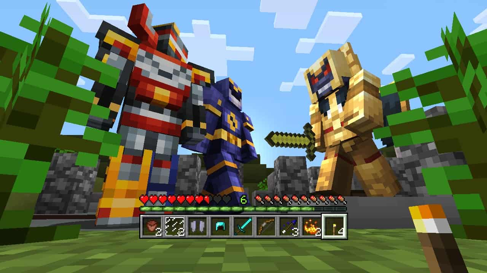
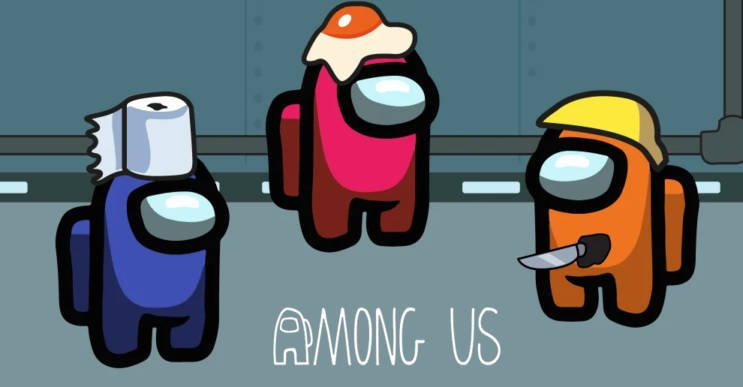

Spacewar! has proved that technology could be fun and led to futher development in the gaming industry
This 2D platformer has made arcade games work the way they do around the world
Create and build your own world in the way you want. With fun mechanics programmers can learn programming through the use of Minecraft
Using the AR technology, Pokemon Go helped people to go out into the world, interact and have some gaming fun in the process. That's practically heresy in the gaming world
A simple game of survival and finding imposters has provided people entainment during the COVID 19 pandamic
A kind hearted person who are willing to help others in different areas of computer science. Many people have learned a lot from him and his knowledge has inspired many others. With his expertise in being a pro gamer, there is no doubt that he will achieve greater good and will benefit the society. The future is pogging right now.
Haygen, computer scientist in Durham University